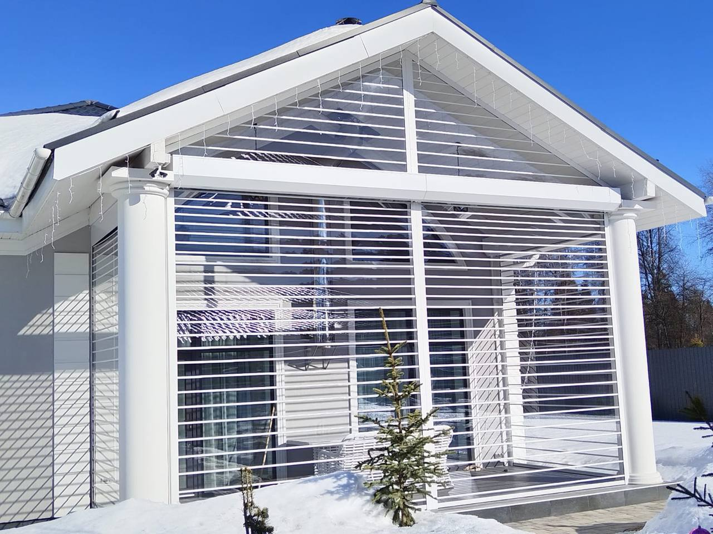
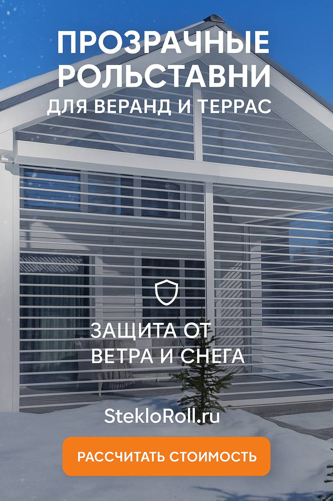
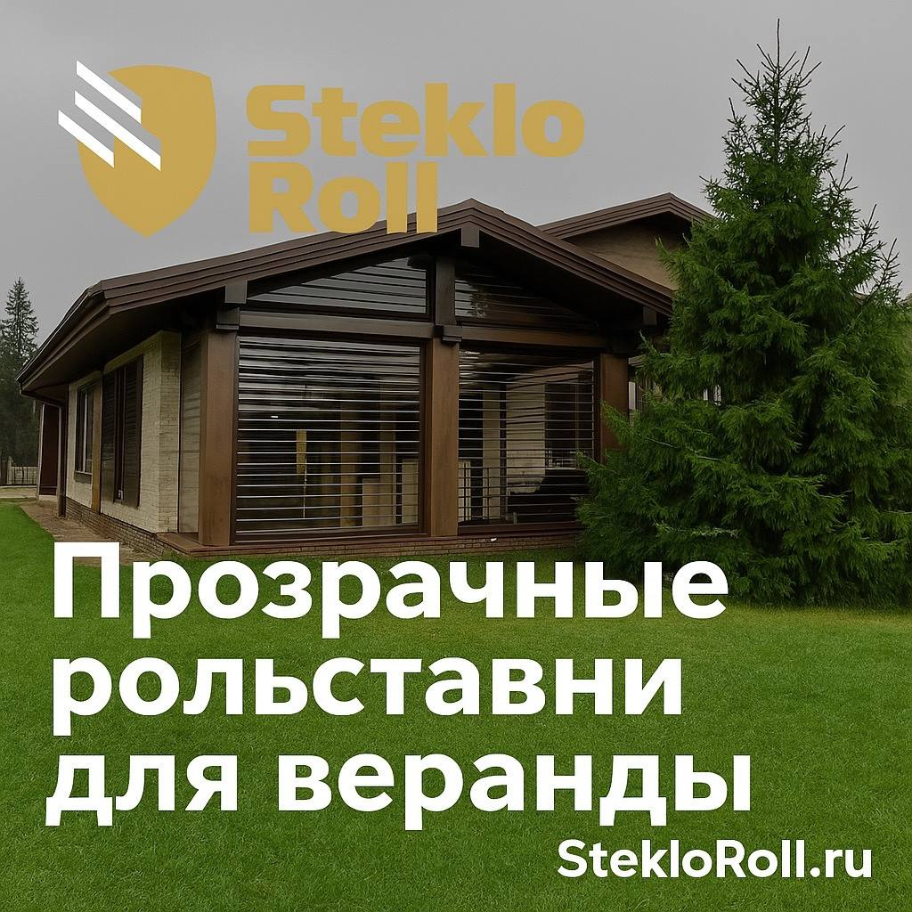
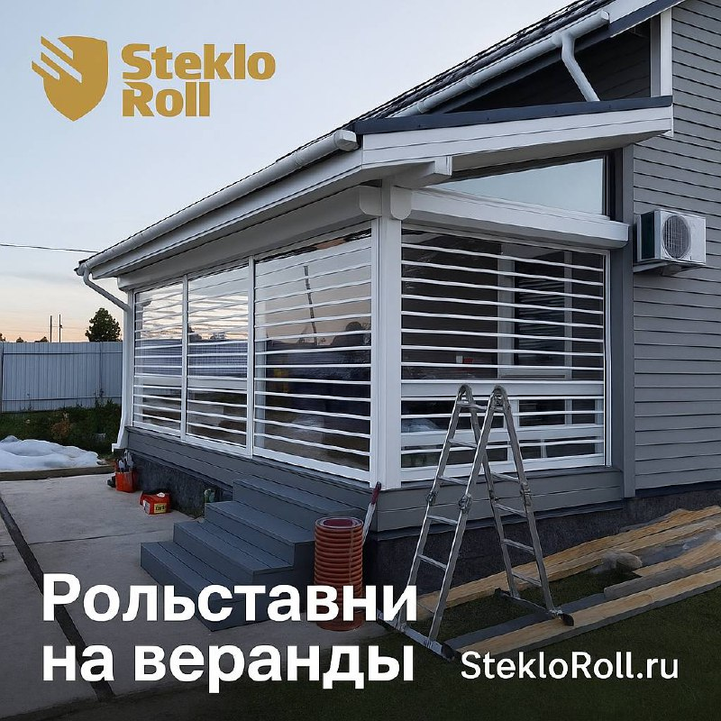
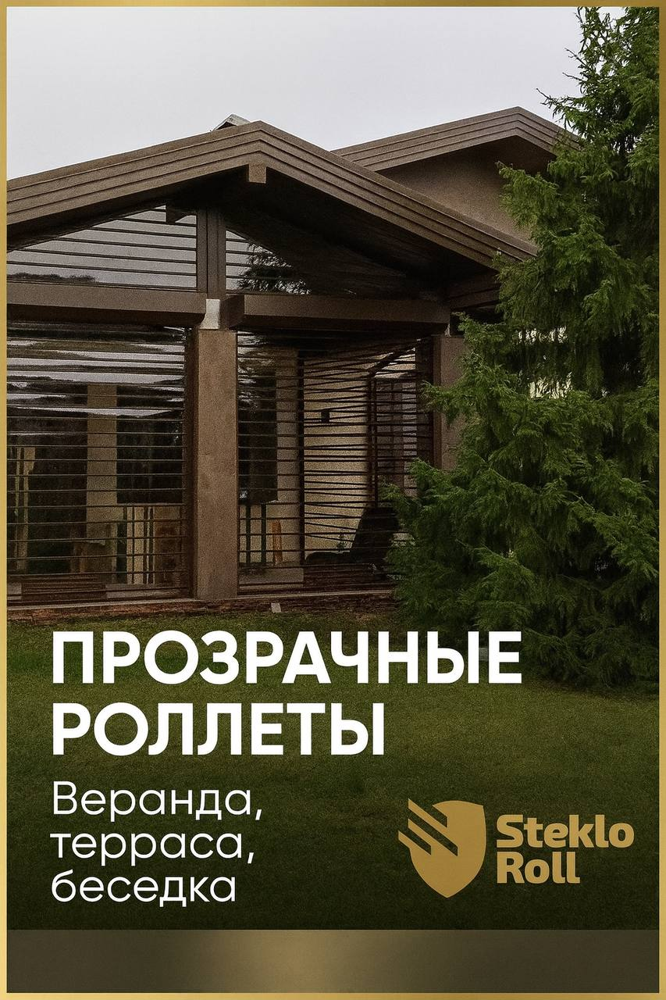

Мечтаете остеклить веранду, чтобы наслаждаться видами сада в любую погоду? Многие владельцы загородных домов сталкиваются с дилеммой: традиционные окна дороги и долго устанавливаются, а тенты не защищают от ветра и пыли. На самом деле есть решение, которое объединяет лучшее от обоих вариантов — прозрачные рольставни. Они позволяют превратить открытую террасу в полноценное жилое пространство за считанные часы, при этом сохраняя панорамный обзор и естественное освещение.
В этой статье разберём, как работают прозрачные роллеты, чем они выгодно отличаются от классического остекления и на что обратить внимание при выборе, чтобы не переплатить за ненужные функции.

Что такое прозрачные рольставни и как они устроены
Прозрачные рольставни — это рулонные системы из поликарбоната или ПВХ, которые монтируются в проём веранды и сворачиваются в компактный короб при открывании. Принцип работы простой: полотно опускается сверху вниз по направляющим, создавая сплошную защитную стену. Для открывания достаточно поднять полотно вручную или с помощью электропривода — и веранда снова становится открытой.
Основные материалы:
- Поликарбонат сотовый — самый популярный вариант. Лёгкий, прочный, хорошо держит тепло. Толщина обычно 6-10 мм.
- Поликарбонат монолитный — более жёсткий, но и тяжелее. Используется для больших проёмов.
- ПВХ-плёнка — бюджетный вариант, подходит для сезонного использования. Менее прочный, но дешевле.
Каркас и короб обычно выполняются из алюминиевого профиля — он не ржавеет и выдерживает российские зимы без проблем.

Преимущества перед обычными окнами
Когда я впервые увидел прозрачные рольставни на веранде соседа, подумал: «Почему я раньше не знал об этом?». Вот что их делает особенными:
- Быстрый монтаж без пыли. Обычное остекление требует фундамента, монтажа рам, герметизации — процесс занимает недели. Роллеты устанавливаются за день, не требуют «мокрых» работ и строительного мусора.
- Гибкость использования. Холодный майский день — опустили полотно и сидите в тёплой веранде. Жара — подняли, и сквозняок обдувает террасу. Первый снег застал врасплох? Защитили мебель одним движением.
- Сохранение вида. В отличие от тентов и штормовых створок, прозрачные рольставни не закрывают обзор на сад или бассейн. Свет проходит хорошо, интерьер остаётся светлым.
- Цена вопроса. Полноценное остекление веранды 6×3 метра обойдётся в 300-500 тысяч рублей. Прозрачные роллеты той же площади — в 3-4 раза дешевле.

Как выбрать прозрачные рольставни: на что смотреть
При выборе системы важно учитывать не только цену, но и эксплуатационные характеристики. Вот практичный чек-лист:
- Размеры проёма. Стандартная высота роллет — до 3,5 метров, ширина — до 6 метров для одного полотна. Если проём шире — делают две створки, встречающиеся посередине.
- Тип управления. Ручной подъём дешевле, но требует физических усилий для больших полотен. Электропривод удобен — нажал кнопку на пульте или в смартфоне. Для дачи, где свет может отключаться, выбирайте систему с ручным аварийным подъёмом.
- Система крепления. Есть варианты с верхним навесом (короб снаружи) и встроенные (скрытый короб). Первый проще в монтаже и обслуживании, второй эстетичнее выглядит.
- Герметичность. Качественные системы имеют щёточные уплотнители по краям полотна и резиновые уплотнители в замковой зоне. Это важно, если планируете использовать веранду зимой.
- Цвет профиля. Белый, коричневый, «под дерево» — выбирайте под цвет кровли или сайдинга дома. Визуально система будет смотреться органично.
Цены и бюджет: от чего зависит стоимость
Сколько стоят прозрачные рольставни для веранды? Цена складывается из нескольких факторов:
| Категория | Материал | Цена за м² |
|---|---|---|
| Эконом | ПВХ-плёнка | от 4 500 ₽ |
| Стандарт | Поликарбонат 6 мм | от 6 500 ₽ |
| Премиум | Монолитный поликарбонат + электро | от 9 000 ₽ |
На что обратить внимание при расчёте:
- Монтаж обычно включён в стоимость, но уточняйте — иногда считается отдельно.
- Доставка может быть бесплатной в пределах области или платной за пределами.
- Электропривод добавляет 15-25 тысяч рублей к стоимости системы.
- Гарантия — у надёжных производителей от 2 до 5 лет на механизмы и полотно.
Советую заказывать замер на объект — менеджер учтёт нюансы: неровности стен, угол открывания, необходимость усиления под электропривод. Типовые "по размеру" решения часто требуют доработки на месте.

7 практических советов от тех, кто уже установил
- Не экономьте на толщине поликарбоната для крупных проёмов — 10 мм значительно тише работает и лучше держит форму, чем 6 мм.
- Если веранда южная, выбирайте поликарбонат с UV-защитой — не пожелтеет за сезон.
- Заказывайте систему с осенней скидкой — в октябре-ноябре цены ниже на 10-15%, а установку сделают до первых морозов.
- Попросите у производителя образцы полотна — сравните прозрачность на солнце, перед покупкой.
- Для частого использования (каждый день) берите электропривод с дистанционным управлением — через год ручной подъём надоест.
- Проверяйте герметичность соединений — от этого зависит, будет ли дуть в углах зимой.
- Уточняйте срок изготовления — в сезон (апрель-май) очереди могут достигать 3-4 недель.

Заключение
Прозрачные рольставни — разумный компромисс между ценой, скоростью монтажа и функциональностью для тех, кто хочет использовать веранду круглый год без масштабного строительства. Главное — правильно выбрать материал полотна, тип управления и доверить монтаж опытной команде.
Подробнее о прозрачных рольставнях, калькулятор стоимости и примеры работ — на сайте StekloRoll →
Там же можно заказать бесплатный замер и получить консультацию по выбору системы под ваш проём.